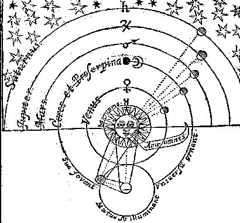

Monday, May the 30th, 2005
back to: title, date or indexes
“Now and again, it will do you a power of good to spend a Wednesday morning tramping along a high ridge, blowing a trumpet and waving a banner. If you can persuade others to join you, so much the better. It will not matter if you are tuneless and raggle-taggle—the experience itself can pump vital energy into your blood, oxygenating your brain and feeding crucial nutriments into your integuments.”
That is the advice I was given by my mentor, or at least by a book handed to me by my mentor on the day I said farewell to him for the last time. It was not a day I am likely ever to forget. After the dawn calisthenics, we had sausages for breakfast. I have never tasted the like, before or since. God only knows what they were made of. Ambrosia, perhaps, or manna. My mentor was kind enough, for once, to overlook my disgusting table-manners, even going so far as to hand me several extra napkins from his precious supply. When I had finished mopping up my drool and spillages, he beckoned me with the Claw Of Gack, and we headed off up into the hills to that lair of his which until now had been forbidden to me. Had I not eaten such a gigantic breakfast, my heart would have been palpitating. As it was, my corporeal being was preoccupied with its digestive functions, freeing my brain to do the palpitations.
Once inside the lair, or cave, my mentor handed me a trumpet and a banner and the book which I have already mentioned, and then he vanished in a puff of inexplicable roseate vapour. I was alone. I waited for the vapour to disperse and then I strode out of the cave… no, I must not lie, I minced out of the cave, and I tumbled down the hillside, battering my trumpet in the process, and I rummaged around in my mentor's pantry until I found more sausages, and while I cooked them I practiced a few toots on the trumpet, and I read the book—the passage quoted above comprises the complete text—and then I unfurled my banner. And when I had finished eating all of the sausages, I set out to make my own way in the world.

My banner
Hooting Yard on the Air, June the 8th, 2005 : “Trumpets and Banners” (starts around 00:15)
Hooting Yard on the Air, August the 2nd, 2006 : “A Note on Pigs” (starts around 16:48)
Hooting Yard on the Air, May the 9th, 2007 : “A Note on Pigs” (starts around 16:48)